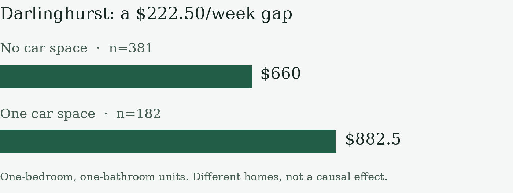
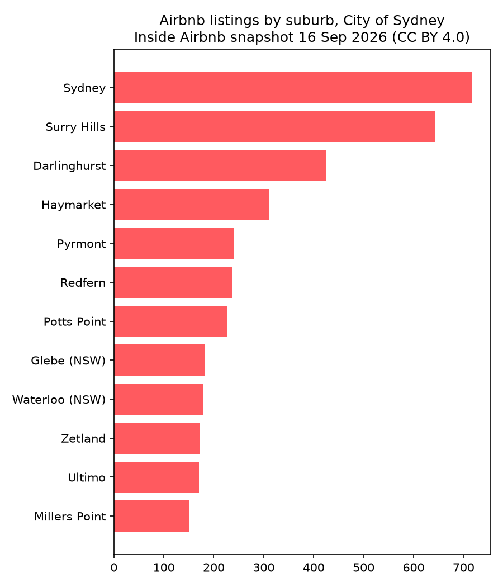
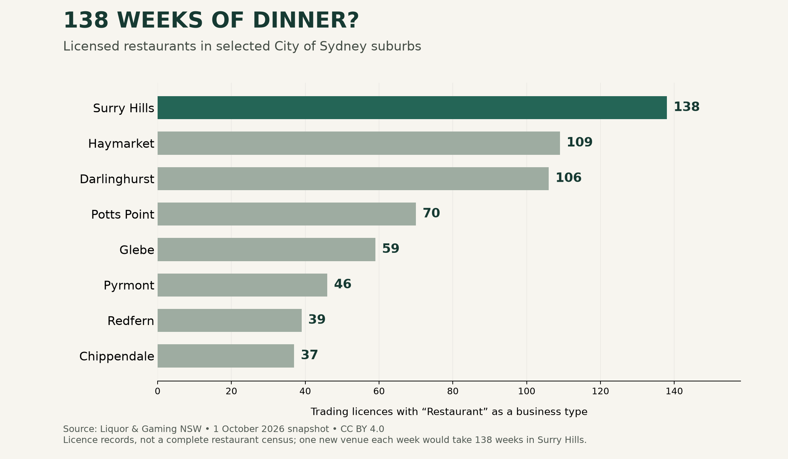
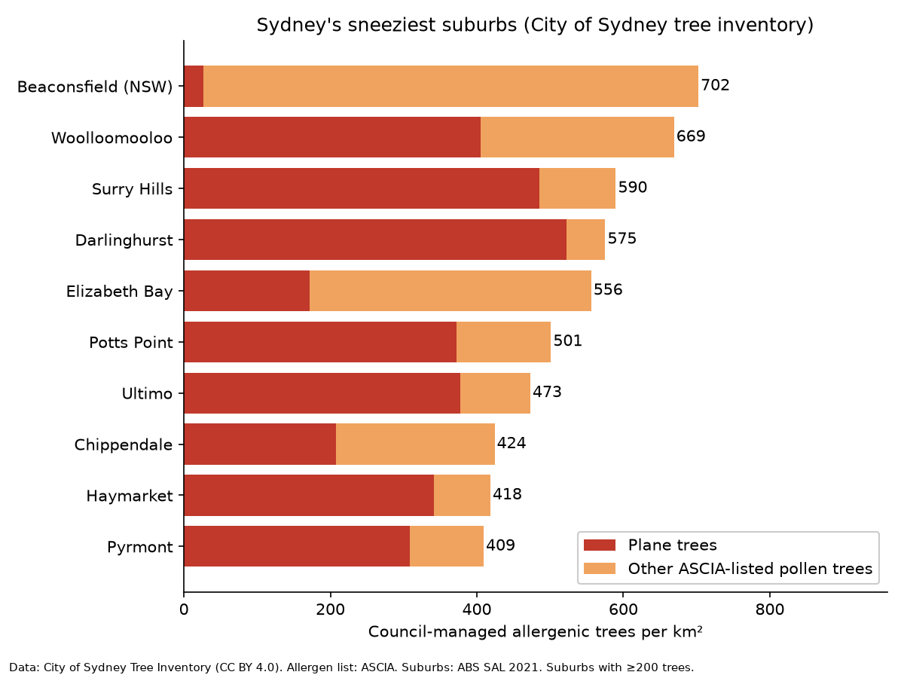
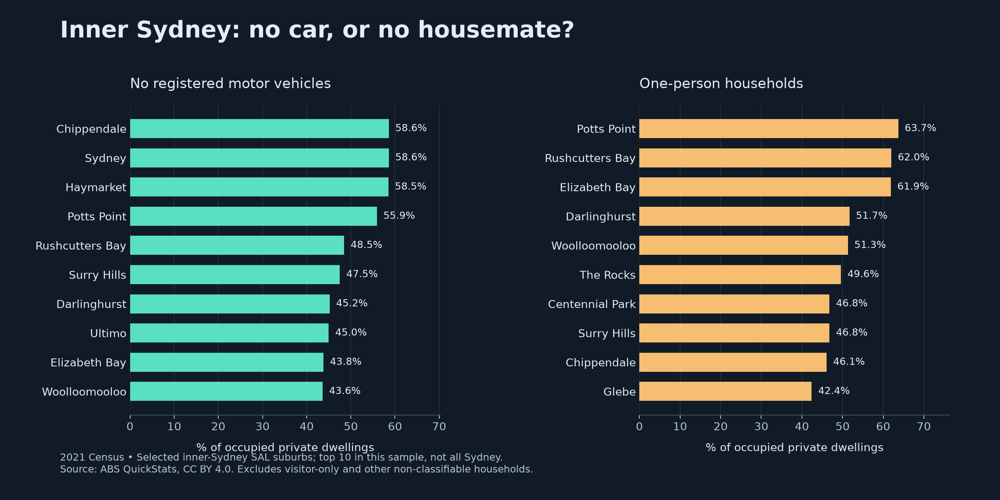

Is your run club
the new Love Island?
We turn Microburbs and open data into timely, shareable insights into Sydney's suburbs, culture and life.
A social hook with neighbourhood evidence
Strava reports that nearly 1 in 5 Gen Z survey respondents went on a date with someone they met through exercise. (global, 2024).
The creative shortlist covers 13 Sydney clubs. Our contribution adds census neighbourhood context and Microburbs rent comparisons. It does not predict who will turn up.
Source: Strava Year in Sport 2024. Club shortlist and final reel are maintained on creator/runclub-reel.
3,631 residents aged 20–34 not living with a partner across four whole suburbs near Kings Cross.
4,844 across Haymarket and Ultimo near Darling Dash.
2021 Census G06. Whole suburbs inside approximate 1.5 km straight-line circles, not walking catchments, attendees or potential dates.
Root video pending merge from the creator branch. Demo walkthrough also pending. Do not imply missing assets are complete.
Thirty-five hooks. One editorial choice.
The winning idea needs attention and a real Microburbs reason to exist.
What we assessed
Surprise, local identity, Microburbs relevance, data strength, timing, political sensitivity and reuse rights.
The original rubric proposes 0–3 per criterion. The saved bank contains confidence labels, not the 35 numeric scorecards. We show the evidence we retained rather than inventing a ranking.
The run-club score is a separate, unvalidated prototype. Its weights are editorial assumptions, not measured dating or attendance signals.
Recorded confidence in the hook bank
Why demote hay fever? The points support suburb counts, but cover council trees only. Counts do not measure pollen, and no Microburbs field drives the claim.
Why demote the marathon? It gives a running post a date, but does not strengthen the Microburbs evidence or establish local social outcomes.
All 35 candidates and their recorded assessment
| Hook | Candidate | Confidence H/M/L | Numeric total |
|---|---|---|---|
| 1 | Rent vs rent | M | Not recorded |
| 2 | 83% of Airbnbs are whole homes | H | Not recorded |
| 3 | Surry Hills almost as many Airbnbs as the CBD | H | Not recorded |
| 4 | Studio reviewed 1,102 times | H | Not recorded |
| 5 | It's not the maples | H | Not recorded |
| 6 | Plane-tree capital | M | Not recorded |
| 7 | Sneeziest suburbs | M | Not recorded |
| 8 | Sneeziest block | M | Not recorded |
| 9 | Brush Box beats jacaranda | H | Not recorded |
| 10 | $10.9m tunnel | H | Not recorded |
| 11 | Busiest bike corner | M | Not recorded |
| 12 | Is your car paying rent? | M | Not recorded |
| 13 | Studio dearer than a 1-bed | M | Not recorded |
| 14 | The $13,000 wall | M | Not recorded |
| 15 | Barangaroo vs Rushcutters Bay | L | Not recorded |
| 16 | Units dearer than houses in Waterloo | L | Not recorded |
| 17 | Car-free Chippendale | H | Not recorded |
| 18 | Living alone | H | Not recorded |
| 19 | Zero-bedroom homes | H | Not recorded |
| 20 | Share-house territory | H | Not recorded |
| 21 | 28-year age gap | H | Not recorded |
| 22 | Renter suburb | H | Not recorded |
| 23 | Tuesday run catchment | M | Not recorded |
| 24 | Monday run catchment | M | Not recorded |
| 25 | Postcode changes the ratio | M | Not recorded |
| 26 | Darlington singles | M | Not recorded |
| 27 | Run clubs and dates | M | Not recorded |
| 28 | 138 weeks of dinner | H | Not recorded |
| 29 | Haymarket per resident | M | Not recorded |
| 30 | Six licences in 100 m | M | Not recorded |
| 31 | Dogs' night shift | M | Not recorded |
| 32 | 19-hour dog happy hour | M | Not recorded |
| 33 | Most off-leash parks | M | Not recorded |
| 34 | Top dog name | H | Not recorded |
| 35 | Stairs of Doom | L | Not recorded |
The investigation beyond the reel
Open data supplies the surprise. Microburbs supplies the neighbourhood and housing context. Pairings are editorial, not completed statistical joins.
Census → housing choices
Chippendale has 58.6% car-free households and 76.0% rented homes, in 2021. Microburbs' Darlinghurst comparison finds $660/week without parking versus $882.50 with it.
Different suburbs and homes; no causal or household-level join.
Airbnb → rent vs rent
5,024 listings, 4,154 entire homes. In postcode 2000, $860 weekly bond rent equals 2.46 nights at a $349.50 nightly Airbnb price.
Price equivalence, not stay length. Compare separately with Microburbs' Barangaroo median of $2,000/week; a like-for-like replacement is still to do.
Licences → neighbourhood life
Surry Hills has 138 trading restaurant licence records. Its Microburbs studio median is $525/week versus $775 for a one-bedroom unit.
Licences are not verified venues or a complete cafe census.

Trees and cameras → useful limits
The council inventory has 4,017 planes and 167 maples, about 24 to 1. Westbound Cross City Tunnel notices total $10.9m face value in FY2025–26.
Microburbs tree-to-listing and camera-to-suburb joins remain proposed. Neither alone earns a Microburbs headline.
Research charts and aggregate tables




Every claim needs a denominator.
The caption is part of the result. "Notices", "not living with a partner" and "advertised median" are deliberate choices.
| Claim | Number and period | Source | What it does not prove |
|---|---|---|---|
| Kings Cross neighbourhood subtotal | 3,631 residents, 20–34 | ABS 2021 Census DataPacks | Four whole nearby SALs, not complete catchment or attendance. |
| Darling Dash neighbourhood subtotal | 4,844 residents, 20–34 | ABS 2021 Census DataPacks | Haymarket 2,809 + Ultimo 2,035. Not living with a partner does not mean available to date. |
Checks we can reproduce
- G06 person totals sum to 1,953 + 686 + 406 + 586 = 3,631 near Kings Cross.
- Haymarket 2,809 + Ultimo 2,035 = 4,844 near Darling Dash.
- Darlington rent change: (725 ÷ 445 − 1) × 100 = 62.9%, rounded to 63%.
Release checks still required
Confirm Microburbs redistribution rights for aggregate tables. Check every final video frame and caption against sources. Peter approves publication and submission.
No raw API data, keys, NSW VG sales records or personal host details belong in the release. Deleting a file from the latest tree does not clean its Git history.
Full claim register, source URLs and methodological caveats
| Claim | Number | Source | Caveat |
|---|---|---|---|
| Kings Cross neighbourhood subtotal | 3,631 residents, 20–34 | ABS 2021 Census DataPacks | Four whole nearby SALs, not complete catchment or attendance. |
| Darling Dash neighbourhood subtotal | 4,844 residents, 20–34 | ABS 2021 Census DataPacks | Haymarket 2,809 + Ultimo 2,035. Not living with a partner does not mean available to date. |
| Darlington not-cohabiting share | 72.3% of applicable 20–34 population | ABS 2021 Census DataPacks | 680 people; G06 denominator, not all residents. |
| Global exercise and dating survey | Nearly 1 in 5 Gen Z respondents | Strava Year in Sport 2024 | 2024 global survey, not a Sydney run-club estimate. |
| Haymarket birthplace shares | Thailand 19.2%; Australia 14.2%; China 23.4% | Microburbs API | Top-ten-country list; reference year unconfirmed. No inference about cultural practice. |
| Darlington age and unit rent | 27.0% aged 20–24; $445 → $725, +62.9% | Microburbs API | Age year unconfirmed. Rent Feb 2015 to Oct 2026, nominal, changing stock, sample sizes unknown. |
| Airbnb price equivalence | $860/week ÷ $349.50/night = 2.46 nights | Inside Airbnb data | With NSW Sep 2026 bond medians. Not average stay length or NYE pricing; fees excluded. |
| Council planes and maples | 4,017 ÷ 167 = 24.05 | City of Sydney tree inventory | Council-managed inventory, not pollen exposure or all trees. |
| Surry Hills restaurant licences | 138 trading restaurant records | Liquor & Gaming NSW premises list | Snapshot 1 Oct 2026; licences are not verified open venues. |
| Tunnel notices | $10,927,157 face value; 23,548 notices | Revenue NSW camera notices | Westbound Cross City Tunnel, FY2025–26. Not cash collected or unique drivers. |
| Darlinghurst parking-associated rent gap | $660, n=381; $882.50, n=182 | Microburbs API | One-bedroom, one-bathroom units, different homes. Not causal parking value. |
Source register
- Microburbs API
- ABS 2021 Census DataPacks
- ABS social marital status definition
- Inside Airbnb data
- Inside Airbnb reuse policy
- NSW rental bond data
- City of Sydney tree inventory
- Revenue NSW camera notices
- Liquor & Gaming NSW premises list
- Strava Year in Sport 2024
- Sydney Marathon 2026
- Sydney Lunar Streets 2027
- Thaitown events
- University of Sydney Welcome Program
- Songkran independent guide
- Kings Cross Track Club schedule
- Darling Dash listing
ABS, Inside Airbnb and City of Sydney: CC BY 4.0. Liquor & Gaming NSW: © State of NSW 2026, CC BY 4.0. Revenue NSW: Creative Commons Attribution, version unspecified. Event and Strava links support paraphrased facts; imagery rights are not assumed. Microburbs public reuse terms remain unconfirmed.
The API covers 29 suburb labels; the inherited census research covers 31 SALs. Birthplace data gives only the top ten countries. Microburbs age/birthplace reference year is not established in these responses. Prototype weights are 0.4 not-cohabiting share, 0.2 small-unit advert count, 0.15 low house median and 0.25 restaurant licences. No validation against attendance, engagement or dating outcomes exists.
Same suburb. A different moment.
A cultural-calendar match gives a checked local fact a reason to be posted now. It is not evidence that an event caused a rent change.
Sydney Marathon
The run-club hook has a timely opening. Neighbourhood context is stronger than a claim about marathon demand.
Sydney Marathon 2026. Timing cue, not a measured trend.
"It's not the maples"
About 24 council plane trees per maple. A crowd-pleasing fun fact from the council tree register.
Seasonal editorial cue. Inventory counts do not measure airborne pollen.
NYE rent vs rent
Barangaroo unit median $2,000/week. Pair with a properly dated accommodation-price comparison.
NYE prices have not been measured. The 2.46-night figure is a September price equivalence, not stay length.
Haymarket and Lunar Streets
"In Haymarket, more locals were born in Thailand than in Australia." Thailand 19.2%, Australia 14.2%, China 23.4%. Unit median $1,200/week.
Sydney Lunar Streets 2027, 5–10pm AEDT. A celebration of Thaitown, timed to the festival on its doorstep.
Welcome to Darlington
27.0% aged 20–24. Recorded unit rent median $445 in Feb 2015 to $725 in Oct 2026, up 63% nominally.
University of Sydney Welcome Program. Not all residents this age are students. Different periods and property mix.
Return to Thaitown
Songkran offers a more direct Thai cultural-calendar connection. Revisit the same suburb with a fresh story.
Songkran independent guide. Cultural dates, not a verified Sydney event listing.
Calendar caveats
Microburbs birthplace and age shares are census-based; reference year unconfirmed. Birthplace describes residents, not who celebrates or attends; posts celebrate suburbs, never target individuals. These dates show a manually curated editorial calendar, not quantified search demand. No local Google Trends or social-listening time series was collected.
Next: a weekly draft feed for every suburb
Refresh data, match a verified moment, draft a post and show the claim trail before approval. Expand city by city after testing joins and reuse rights.
Today: research, a hook bank, prototype score and manual calendar. Next: live trend signals and engagement tests. No performance claim is made.